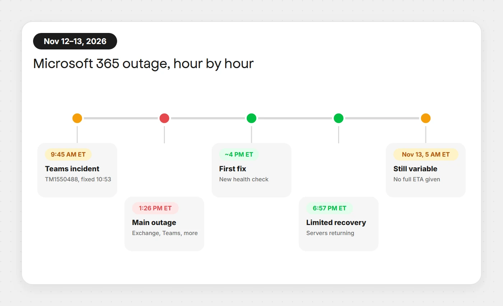
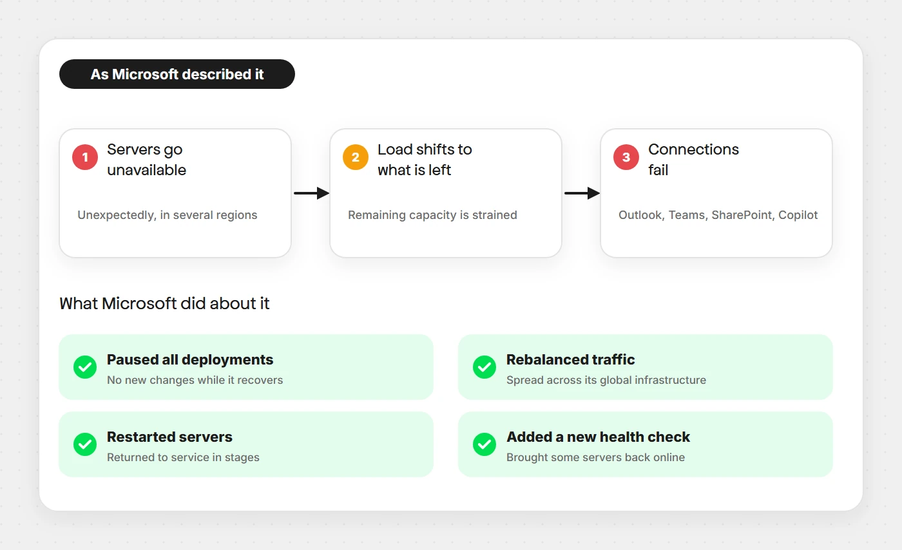

If Outlook would not load, Teams felt broken, or Copilot gave up on you on Thursday, it was not your network. A widespread Microsoft 365 outage began on November 12, 2026 and, according to Microsoft’s own updates, had not been fully resolved by early Friday, November 13. This post pulls together what was reported, what Microsoft actually said, and what you can do about it.
Everything below comes from reporting by CNBC and BleepingComputer, which quote Microsoft’s admin-center advisory and its public status posts. Where the sources disagree, or where something is still unknown, this post says so instead of guessing.
Short version: starting around 1 PM ET on Nov 12, 2026, customers could not reliably connect to Exchange Online, Teams, SharePoint Online, Microsoft 365 Copilot and Defender XDR. Microsoft says it is not aware of any malicious activity and reported only partial recovery at its latest updates. Last updated: November 13, 2026.
What happened
Reports of trouble surged on Thursday afternoon. Downdetector showed spikes for Outlook, Microsoft 365, Teams, Copilot, Azure, OneDrive and the Microsoft Store. Microsoft’s admin-center advisory, MO1550821, told customers they “may be unable to connect” to Exchange Online, Microsoft Teams, SharePoint Online, Microsoft 365 Copilot and Microsoft Defender XDR.
BleepingComputer reports that Microsoft dated the incident to 1:26 PM ET on Thursday. CNBC puts the start at “shortly before 1 p.m. ET.” Microsoft first looked at Exchange Online mailbox connectivity problems in the Americas, then confirmed that users in any region could be affected.
Outlook was the most visible casualty, but the damage spread. CNBC reports that services which connect to Outlook Calendar were also hit. Several large companies felt it too: CNBC notes that earnings releases from Richemont and Workhorse Group were affected, and that Air India temporarily rerouted its emails.
Timeline: Nov 12 to Nov 13

| Time (ET) | What was reported |
|---|---|
| Thu, 9:45–10:53 AM | A separate Teams incident (TM1550488) caused messaging delays and failures. Microsoft blamed resource contention and says it is resolved. |
| Thu, ~1:00–1:26 PM | Main Microsoft 365 incident begins; Exchange Online, Teams, SharePoint, Copilot and Defender XDR affected (MO1550821). |
| Thu, ~4:00 PM | Microsoft says it validated an alternative service health check method that brought some servers back online, and began applying it more broadly. |
| Thu, 6:57 PM | Microsoft reports limited recovery and says it is returning a portion of affected servers to service. |
| Fri, ~5:00 AM | Users may still be unable to connect to Outlook on the web or desktop. Most Teams access is available. Service is variable and full capacity is not restored. |
Sources: BleepingComputer and CNBC. Microsoft has not said whether the morning Teams incident and the main outage are related.
What Microsoft says caused it
Microsoft has not published a final post-incident review, so there is no confirmed root cause yet. What it has said publicly, in pieces, is this:

- Microsoft said the elevated load was not driven by an increase in traffic. Instead, a number of servers were “unexpectedly unavailable,” straining the remaining infrastructure (quoted by BleepingComputer). CNBC notes that Microsoft’s early explanation had mentioned a traffic surge, so early wording varied.
- At 6:57 PM ET Microsoft said a core process on affected servers was becoming overwhelmed, causing a loss of capacity, and that it was checking whether reverting a small number of recent configuration updates could speed recovery.
- Microsoft paused all deployments, redistributed connection traffic across its worldwide infrastructure, and restarted affected servers.
- Microsoft said it was not aware of any malicious activity causing the outage.
Treat the configuration-update point as an investigation lead, not a conclusion. Until Microsoft publishes its review, nobody outside the company can say for certain what triggered the failure.
Who was affected
Because Microsoft 365 sits underneath so much daily work, the impact went beyond mail:
- Outlook and Exchange Online: sign-in and mailbox connection failures on web and desktop.
- Teams: access was disrupted, though by early Friday Microsoft said most access was available.
- SharePoint Online and Copilot: listed in the advisory as unreachable for some customers.
- Defender XDR: also named in the advisory, which matters to security teams who rely on it during an incident.
- Email delivery: Microsoft said it was extending the retry window for delayed messages to up to 48 hours.
One thing to watch in the headlines: some early reports tied this to a wider internet problem. CNBC reports that Amazon said AWS was “operating normally” and that an unrelated disruption elsewhere on the internet was prompting some inaccurate news reports. Azure appeared in Downdetector spikes, but Microsoft’s advisory names Microsoft 365 services, not Azure.
The market noticed as well. CNBC reported Microsoft shares about 2.6% lower in premarket trading on Friday.
What you can do right now
If you are a regular user
- Check Microsoft’s status page (status.cloud.microsoft) or the Microsoft 365 Status account on X before you spend an hour resetting your own settings.
- Do not re-send important email over and over. Microsoft says delayed messages will keep being retried for up to 48 hours, so duplicates can create more confusion than they solve.
- Move urgent conversations to a channel that is not affected, such as a phone call, a different chat tool, or a plain text message.
- Expect variable behaviour. Microsoft described service as variable, so something that fails now may work in ten minutes.
If you are an IT admin
- Follow advisory MO1550821 in the Microsoft 365 admin center. That is the authoritative source for your tenant.
- Tell staff early that this is a Microsoft-side incident, so they stop opening tickets about passwords and Outlook profiles.
- Avoid making tenant changes while the service is unstable. There is nothing in the public reports to suggest customer-side configuration caused this.
- Keep notes on the impact window. You will want them for the post-incident review and for any SLA conversation with Microsoft.
Lessons for builders and teams
I build web apps for a living, and outages like this are a useful reminder that your own systems inherit the weaknesses of every service they depend on. A few practical takeaways:
- Have an out-of-band way to talk. If your incident channel lives inside the thing that is down, you have no incident channel.
- Make retries safe. Anything that sends mail, webhooks or notifications through a third-party service should queue and retry with idempotency, so a provider outage becomes a delay instead of lost data.
- Do not trust one status page. Combine the vendor’s status, independent monitoring, and your own health checks.
- Write the runbook before you need it. Who decides to switch to the backup channel, and how do customers hear about it?
- Show users a clear message. A branded “our email provider is having problems” notice beats a silent failure every time.
If you are curious how AI features like Copilot fit into this picture, my guide to OpenAI’s newest model covers how these assistants get built into everyday workflows, and why depending on them needs a fallback plan.
Final take
This was a large, messy outage on a platform millions of organisations treat like electricity. The honest state of knowledge as of November 13, 2026 is: it started around 1 PM ET on Thursday, Microsoft says servers became unexpectedly unavailable and strained what remained, recovery was partial at the latest updates, and a root cause has not been confirmed. Microsoft has also said it is not aware of malicious activity.
I will update this post as Microsoft posts a post-incident review or reports full restoration. Until then, the best habit is the boring one: rely on the admin center advisory, keep a backup way to communicate, and be patient with delayed mail.